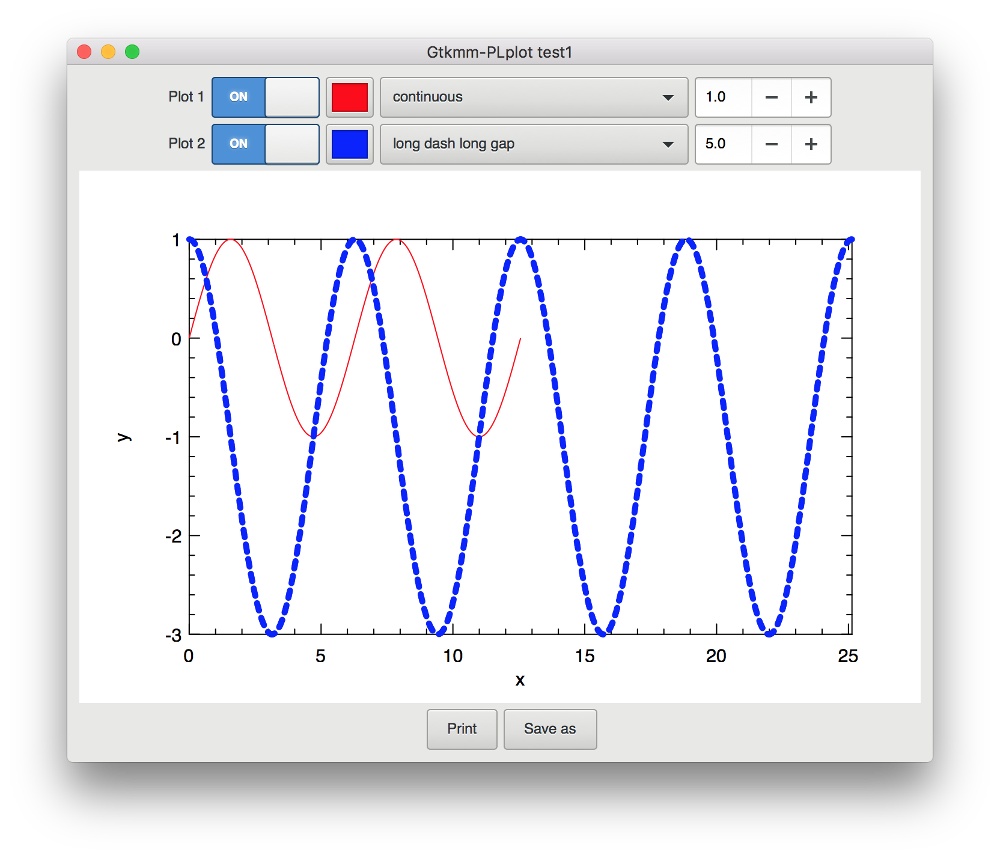

|
Gtkmm-PLplot
2.1
A scientific plotting library for Gtkmm
|
|
Gtkmm-PLplot
2.1
A scientific plotting library for Gtkmm
|

Scientific plotting and GTK+ have never been good friends. Over the years there have been several attempts like GtkExtra, GtkDataBox, GoatPlot, GtkGraph, Plotmm... All of these packages unfortunately appear to share a lack of development and maintenance, which is most clearly shown by the fact that they do not support the latest release series GTK+3!
Now it is clear that writing a plotting library for GTK+ is a huge and cumbersome task, and the lack of support for GTK+3 can be most certainly explained by the transition of the GTK+ drawing routines to use Cairo instead of GDK, which essentially required developers to rewrite all their code from scratch.
Due to the nature of my scientific work, I found myself in need of scientific plotting widget support in GTK+ and for some time I have been able to do what I needed with GtkExtra. Although certainly not perfect, it comes with a wide range of plotting routines, but as I said before, it only supports GTK+2. In order to address this shortcoming, I have joined the development team some time ago but I found myself lacking the knowledge of the GTK+ and Cairo internals to produce a working version that supports GTK+3.
Despite the lack of attention by the other developers of GtkExtra, I found myself still in need of a scientific plotting widget for GTK+3, so I decided to find a different solution. Since I certainly do not have the skill (or time for that matter) to write an entire class of GTK+ widgets for scientific plotting, I had to find a different approach. The idea that eventually culminated into this project was the following: first I rediscovered the PLplot library, which I had used many years ago to produce simple plots from within command-line programs. I went through their (excellent) documentation and discovered that they had introduced support for a Cairo plotting driver, along with an extcairo device that allowed PLplot to draw onto a Cairo context. An example is included in the source where they demonstrate this feature by plotting onto a Cairo context connected to a PostScript surface. Based on this example I wrote my own Gtkmm widget that inherits from Gtkmm::DrawingArea with a custom on_draw method as explained in the GTK+ and Gtkmm manuals. With surprisingly little work, I managed to produce a nice looking plot.
I followed up with a blogpost about this and a couple of days later I decided to start this project after it was clear that it could be useful to myself and my colleages.
I think that the approach followed by Gtkmm-PLplot has the following advantages:
There may be people wondering why I didn't write this in plain C using GTK+ instead of Gtkmm. I acknowledge that this project would benefit from this as it makes the API easily available in other languages through GObject introspection. However, writing GTK+ widgets is a real pain (remember: nobody is maintaining those other plotting widgets...), while writing in C++ produces nice, streamlined and compact code, especially when using the C++11 features. It's also just a lot more fun to do, and that's very important to me :-)
Starting with version 2.0, Gtkmm-PLplot is released under the GNU Lesser General Public License.
That's it! Enjoy using Gtkmm-PLplot and let me know if you run into bugs...
 1.8.11
1.8.11